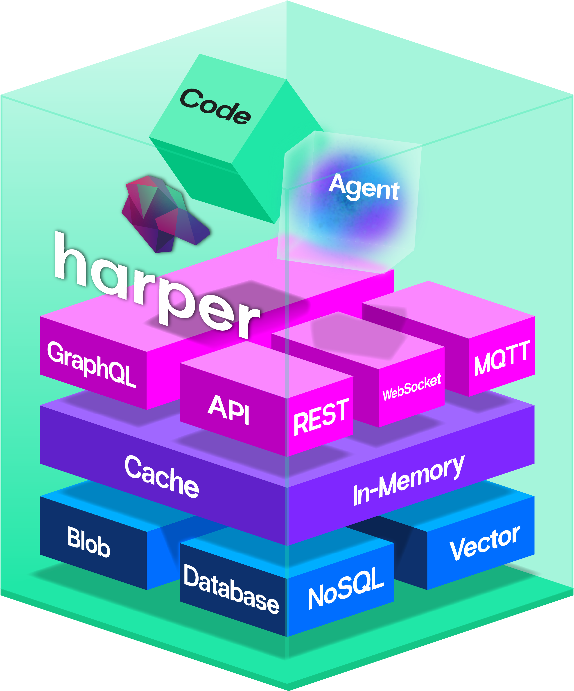

Performant, Parallelizable, Framework Agnostic Node.js Integration Testing
Ethan Arrowood · Node.js Interactive @ Render ATL 2026
Testing is hard
"It works on my machine."
"That test's just flaky, re-run it."
"You can't run those locally."
"It only runs in CI."
"Don't touch it! It's finally green."
What am I testing?

One process contains:
- Database
- Networking stack (socket, HTTP, WS, etc.)
- File System & Blobs
- Applications and plugins
- Worker threads for parallelism
What "integration" means here
Unit
A slice of code, in isolation. Mocks and stubs are fine. Fast, but it can't see the system.
Integration
The complete, built application running in CI, a container, or on your laptop.
End-to-end
Deployed to production-like infrastructure
Why a collapsed stack resists integration testing
Conventional service
- Mock the database
- Mock the queue
- Boot the app in-process
- Tests are cheap and parallel by default
Harper
- The database is the thing under test
- So is the network layer, and the CLI
- A real test needs a real Harper process
- Tests are expensive and conflict by default
Every test needs its own process.
Now make it fast.
Four constraints
- Parallelize — but each test owns a heavyweight process
- Don't collide — every instance wants the same ports
- Run anywhere — three operating systems, laptops and CI
- Don't marry a runner —
node:testfor APIs, Playwright for browsers
1. How parallel is too parallel?
Measuring instead of guessing
Two things called "concurrency"
File parallelism — real
node --test \
--test-concurrency=5 \
"*.test.js"Each file gets its own child process. Separate memory, real OS parallelism.
Test concurrency — async
suite('x', { concurrency: true }, () => {
test('a', async () => { … });
test('b', async () => { … });
});One event loop. Promise.all, not processes.
Node's default is built for cheap tests
// node:test default --test-concurrency
os.availableParallelism() // 12 on my laptopReasonable for unit tests. For twelve simultaneous database processes, it is a guess — so I measured it.
The experiment
- 20 generated test files, each starting a simulated application in its own process
- Work per file randomized within a mode — 0–100 MB file I/O, 0–3 processes, 0–4 worker threads
- Concurrency swept 1 → 12 (sequential to max parallelism)
- 25 samples per level, on a normally-used laptop
Optimizing for developer experience, not benchmark numbers — nobody stops using their machine while tests run.
Median duration, 20 files, 25 samples
| Concurrency | Median | Std dev | p95 | Speedup |
|---|---|---|---|---|
| 1 (sequential) | 9,939 | 363 | 10,607 | 1.00× |
| 2 | 5,776 | 307 | 6,164 | 1.72× |
| 4 | 3,904 | 368 | 4,648 | 2.55× |
| 7 | 3,468 | 294 | 3,990 | 2.87× |
| 10 | 3,534 | 654 | 5,339 | 2.81× |
| 12 (max) | 3,952 | 488 | 4,792 | 2.51× |
The gain plateaus, then reverses
The mean hides the real cost
| Concurrency | Std dev | p95 | Worst run |
|---|---|---|---|
| 7 | 294 | 3,990 | 4,520 |
| 10 | 654 | 5,339 | 5,466 |
| 11 | 690 | 5,096 | 5,717 |
Past the plateau, variance more than doubles. The p95 at concurrency 10 is worse than the median at concurrency 4 — more than twice the processes, to land in worse territory.
Developers don't experience your median. They experience the run they're waiting on.
What I expected, and what I got
Hypothesis
Over-parallelizing causes resource contention, thrashing, and unpredictable failures.
Measured
Contention and thrashing: yes. Failures: zero, at every concurrency level, in all 25 samples.
Correctness held. The cost showed up entirely in the tail.
So this became the default
// @harperfast/integration-testing — src/run.ts
const CONCURRENCY = concurrencyOption
? parseInt(concurrencyOption, 10)
: Math.max(1, Math.floor(availableParallelism() / 2) + 1);floor(12 / 2) + 1 = 7 — the measured
optimum on the machine the measurements came from.
Half of available parallelism, plus one. Overridable by flag or environment variable, because your workload isn't mine.
2. Two databases, one machine
Everything wants port 9925
The obvious fix, and why I skipped it
Dynamic port allocation: ask the OS for a free port, hand it to the instance.
Except one Harper instance doesn't bind a port:
- Operations API — 9925
- HTTP / application server — 9926
- Replication, clustering, and more
Remapping all of them, per instance, means threading a config matrix through every test — and every URL in every assertion.
Don't change the ports.
Change the address.
One loopback address per instance
// every instance keeps its default ports
worker 1 → http://127.0.0.2:9925
worker 2 → http://127.0.0.3:9925
worker 3 → http://127.0.0.4:9925- Zero config remapping — 9925 is still 9925
127.0.0.0/8is 16.7 million addresses- Instances are isolated by address, not by port bookkeeping
The catch: only Linux gives them to you
| Platform | 127.0.0.2–127.255.255.255 |
|---|---|
| Linux (Ubuntu) | Enabled by default |
| macOS | Must be added per address |
| Windows | Must be added per address |
npx harper-integration-test-setup-loopback # needs sudoA one-time, per-machine cost — and the honest price of this design.
The pool is a JSON array of PIDs
index 0 → 127.0.0.2 · index 1 → 127.0.0.3 · …
- Index is the address; value is the owning process ID
- Lives in
tmpdir(), so every test process shares it - First-available allocation; released on teardown
Cross-process mutex in one flag
// 'wx' fails if the file already exists — atomically
const handle = await open(LOCK_PATH, 'wx');
await handle.close(); // we hold the lockNo dependency, no daemon, no shared memory. The file system already has the primitive.
Plus a stale-lock timeout: a lock file older than 10 seconds is assumed abandoned and removed — because a crashed test process cannot unlink its own lock.
Crashed tests would leak addresses forever
// signal 0 checks liveness without signalling
try {
process.kill(pid, 0); // alive — leave it allocated
} catch {
loopbackPool[index] = null; // dead — reclaim it
}Reaped lazily, only when the pool looks full. A Ctrl+C mid-run costs you nothing on the next run.
Allocated is not the same as usable
// bind to port 0 just to prove the address exists
server.listen(0, loopbackAddress, () => {
server.close(() => resolve(loopbackAddress));
});Verified twice: once for the whole pool at startup — with an actionable error naming the setup script — and once per allocation.
What a test actually gets
await startHarper(ctx);
// 1. allocate a loopback address from the pool
// 2. create a temporary install directory
// 3. spawn Harper, wait until it is actually ready
// 4. populate ctx.harper
ctx.harper.httpURL // 'http://127.0.0.3:9926'
ctx.harper.operationsAPIURL // 'http://127.0.0.3:9925'
await teardownHarper(ctx);
// kill, release the address, remove the directoryReplication used to need a data center
The old way
- Five Harper containers on a Docker network, or five VMs
- Cluster env vars, IPs, and DNS templated in by hand
- Driven by Postman collections in bespoke CI jobs
Now
- N in-process instances from the same loopback pool
- Connected with a plain
add_nodeoperation - Write to one node, assert it lands on the others
Parallelism was the goal. The bonus: a node dying and catching up, mesh
vs. star topology, even migrating off a legacy 4.x node — all in ordinary,
parallel node:test files.
A cluster is N instances plus add_node
// a cluster is N instances, each on its own loopback address
const nodes = await Promise.all(
Array(4).fill().map(async () => {
const ctx = { harper: { hostname: await getNextAvailableLoopbackAddress() } };
await startHarper(ctx, { config: replicationConfig });
return ctx.harper;
})
);
// connect each node to node 0, then write here and read there
for (const node of nodes.slice(1))
await sendOperation(node, { operation: 'add_node', hostname: nodes[0].hostname });
await sendOperation(nodes[0], { operation: 'upsert', table: 'dog', records: [dog] });
const res = await sendOperation(nodes[1], { operation: 'search_by_id', ids: ['1'] });
strictEqual(res[0].name, 'Harper');No cluster helper. Start the single instance N times and wire the nodes with normal operations; the framework's one job is handing out conflict-free addresses.
3. Framework agnostic
The constraint that keeps the rest honest
The API imports nothing from a test runner
startHarper(ctx, options?)
setupHarperWithFixture(ctx, fixturePath, options?)
killHarper(ctx)
teardownHarper(ctx)
createHarperContext(name?) // for non-node:test frameworksctx is any object with an optional
name and a harper property to write to.
Deliberately loose, so a node:test
context and a plain object both satisfy it.
The rule that made it possible
"Important! This script should not be required to execute integration tests."
The convenience runner holds no state. Every test file
still runs under plain node --test, and parallelization still
works.
Two runners, same lifecycle
node:test — file per process
suite('install', (ctx: ContextWithHarper) => {
before(async () => {
await startHarper(ctx);
});
after(async () => {
await teardownHarper(ctx);
});
test('serves', async () => {
const res = await fetch(ctx.harper.httpURL);
strictEqual(res.status, 200);
});
});Playwright — worker-scoped fixture
const test = base.extend<
{}, { harper: HarperContext }
>({
harper: [makeHarperFixture(name),
{ scope: 'worker' }],
});
test('home page renders',
async ({ page, harper }) => {
await page.goto(harper.httpURL);
await expect(page.locator('h1'))
.toHaveText('Next.js v16');
});The entire Playwright integration
export function makeHarperFixture(fixtureName: string) {
return async ({}, use) => {
const ctx = createHarperContext(fixtureName);
const started = await setupHarperWithFixture(ctx, fixturePath, {
harperBinPath: getHarperBinPath(),
startupTimeoutMs: 120_000, // a Next.js build is slow
});
await use(started.harper);
await teardownHarper(started);
};
}~40 lines including error handling. The pool, the locking, and the address assignment are all inherited for free.
What the framework won't decide for you
- Starting an instance has real cost — a process, an address, a directory
- One instance per logical test block: usually right
- One instance per assertion: almost always wasteful
- The only hard rule: concurrent scopes need separate instances
The pool makes cross-process allocation safe. Your setup and teardown hooks decide the boundaries.
None of this works without disciplined tests
- Independent — no dependence on order or shared state
- Hermetic — self-contained, no external side effects
- Deterministic — same input, same output
These aren't style preferences. They are the precondition for safe concurrency — and the reason 25 samples at every concurrency level produced zero failures.
4. Surviving CI
Where the laptop assumptions break
Default runners can't take the parallelism
- A standard GitHub runner handles one integration test fine — and buckles running many
- Overloaded runners cause flaky failures; correctness is never traded for speed
- So parallelize across runners: matrix jobs plus test sharding
npm run test:integration -- --shard=1/4 # one job per shardAnd be deliberate about when
- Full matrix on every commit of every PR exhausts concurrency limits
- Path filters, manual triggers, and merge-time-only full runs
- Merge queue: one configuration per PR, the whole matrix before merge
Fast iteration on the PR, thorough verification on the branch that matters.
What to take home
- Measure your concurrency ceiling. For process-heavy tests it's near half your cores, not all of them.
- Watch the tail, not the mean. Over-parallelizing buys variance.
- Isolate by address, not by port. One loopback address per instance deletes a config matrix.
- The file system has your mutex.
open(path, 'wx')plus a stale timeout. - Make the runner optional. That constraint is what buys you the second framework.
Thank you
HarperFast/integration-testing · the parallelization analysis · HarperFast/nextjs
Ethan Arrowood · ethanarrowood.com · slides built with Dais